J30 Bayou Bleu for sale
1982 J30 “Bayou Bleu”
- Flag blue topsides
- Hull number 270
Bayou bleu is a fantastic racer/cruiser. I've owned her for 20 years.
I've done wednesday night races every week with a crew from 2 to 7.
I've done a lot of single handing, in winds up to 25 kts, under control.
She's also great for cruising with 2 people; I've done a one week cruise
with a friend every year.
Many upgrades, including instruments, sails, rigging.
I'm selling Bayou Bleu because I joined a consortium on a J/97.
Sails
- Neil Pryde Main, PXB, full battens 2018
- Neil Pryde #1 PXB Lightskin 2024
- Neil Pryde #3 Vectrix membrane in technora and with grey Liteskins. 2021
- Neil Pryde Spinnaker 2018
- Full set of older sails (main, #1, #3, spinnaker)
Electronics
All nav lights and interior lights converted to LED
All new Garmin instruments 2018, including:
- Garmin wired sailpack 43 (wind, depth, compass, speed)
- 3 Garmin displays (GNX Wind and (2) GNX 20)
- Garmin echoMAP chartplotter mounted on arm
- Brand new, ready to install, Garmin wind instrument
VHF radio
Simrad Tillerpilot TP10 2020
Stereo system
Engine
Yanmar 2QM15 Diesel Engine
15 HP
Dripless shaft seal
Waterlift muffler
Always maintained
Equipment
Tiller steering
New Harken Primary winches 2017
Aluminum spinnaker pole
Rigid vang
Lifelines and stanchions replaced 2012
New Harken carbo racing foil 2024
All shrouds and stays replaced 2014
Portlights replaced with tinted safety glass 2024
Martek 2 blade folding prop; reconditioned and balanced 2020
120V shore power with installed battery charger
2 burner alcohol stove
Manual fresh water system with tank
Enclosed head with holding tank and pumpout
Icebox
2 quarter berths
2 salon berths
V berth
Danforth anchor with chain and line rode
2 deep cycle batteries
Bottom sanded and painted every spring with one coat of Vivid
Bayou Bleu is ready to race and/or cruise.
Click on any image to view the full-size version.

 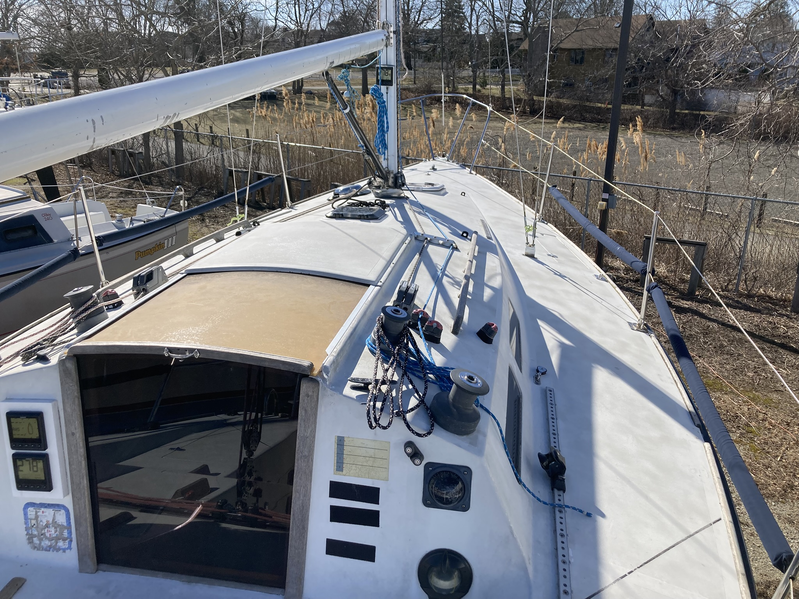
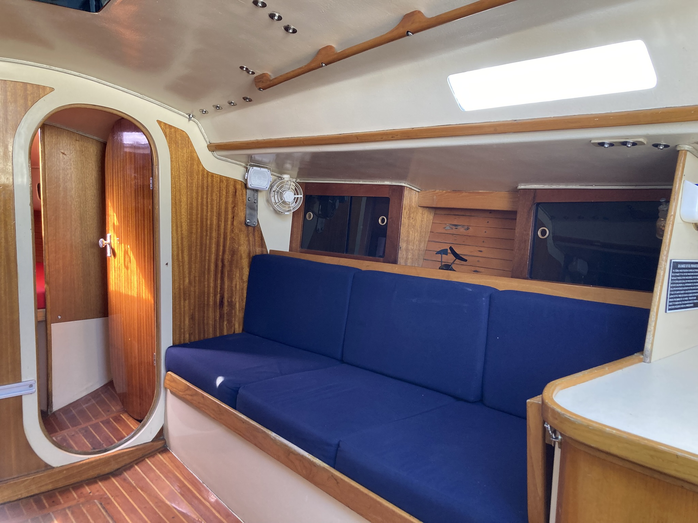
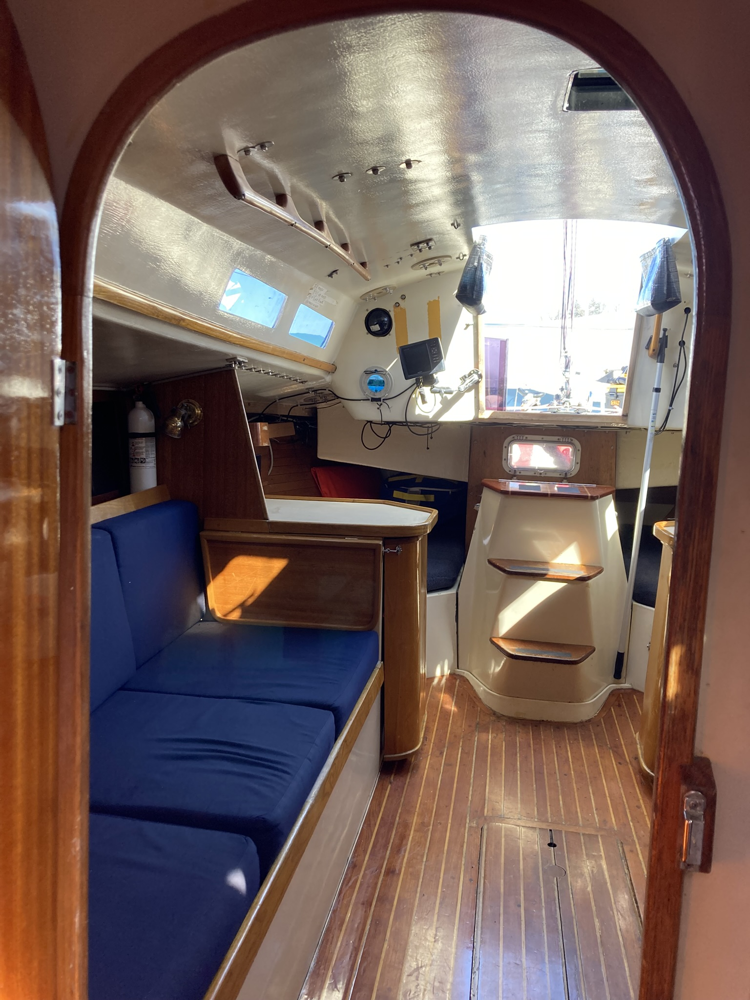
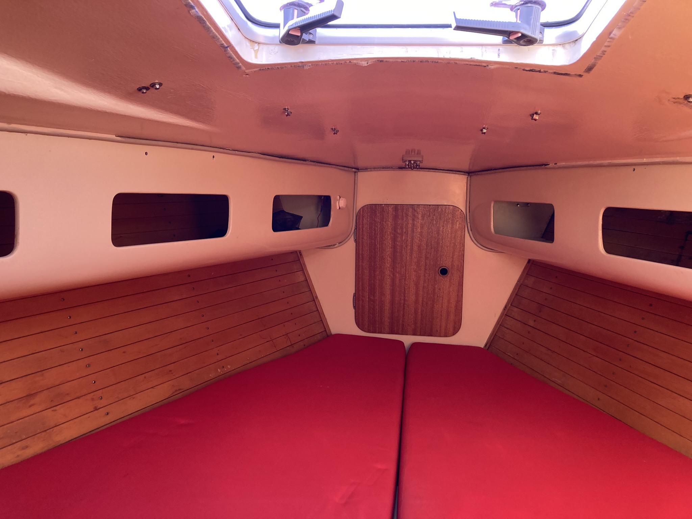
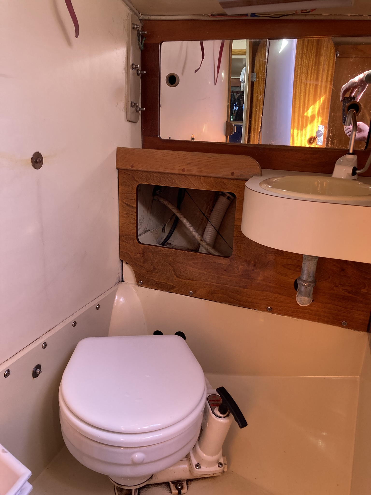
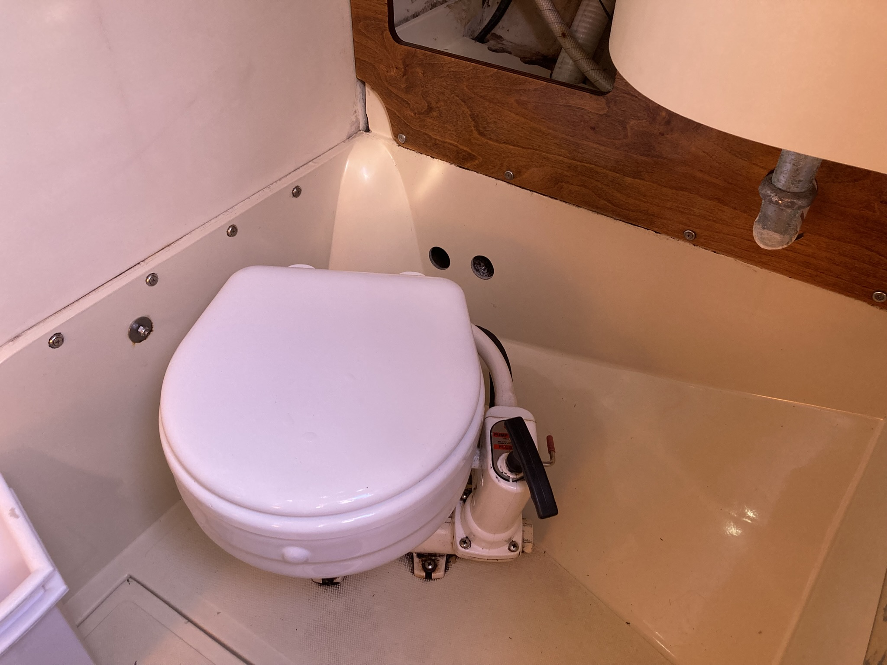
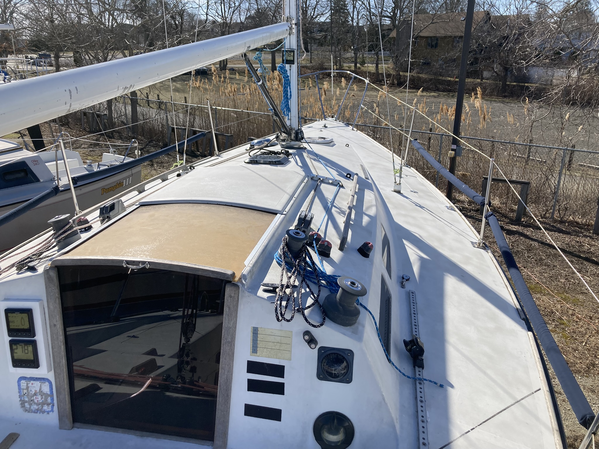
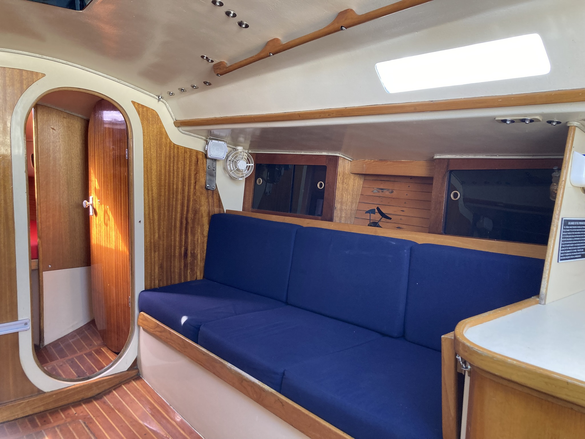
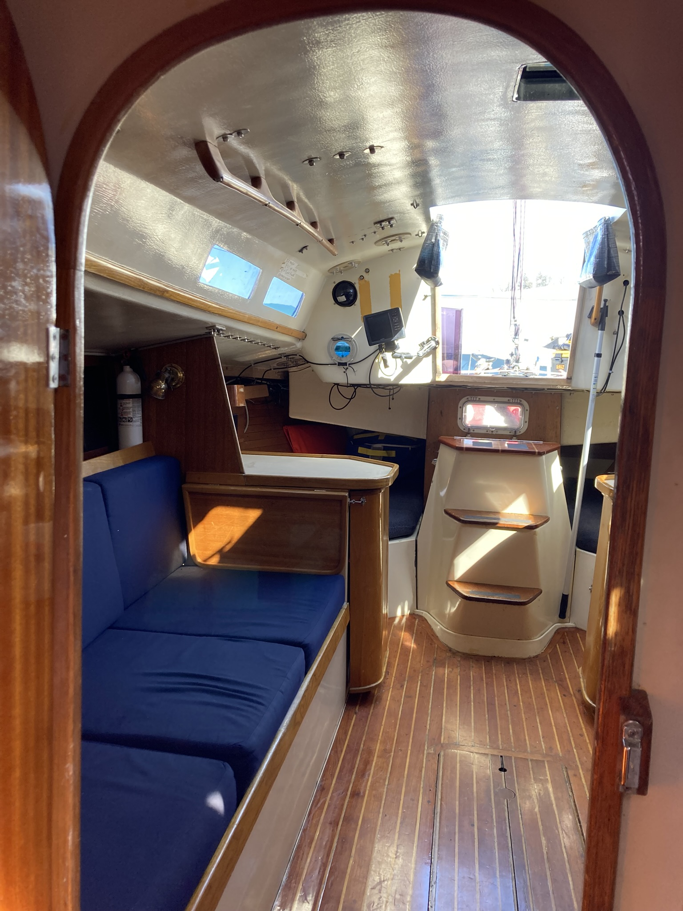
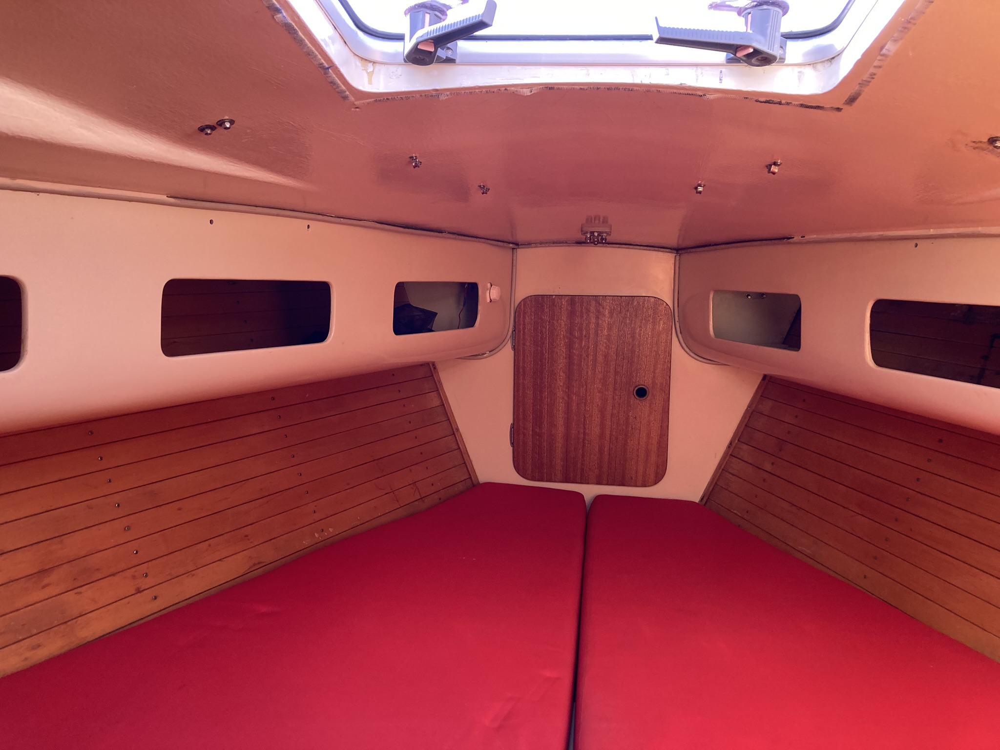
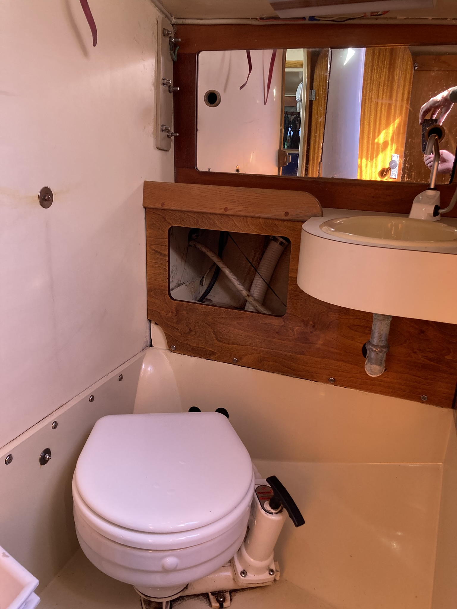
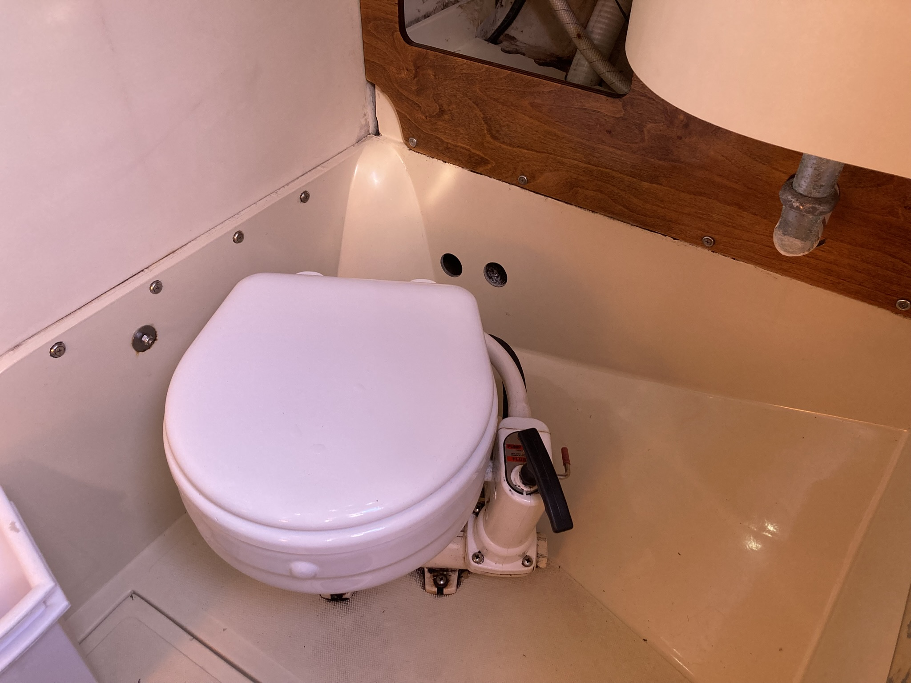
 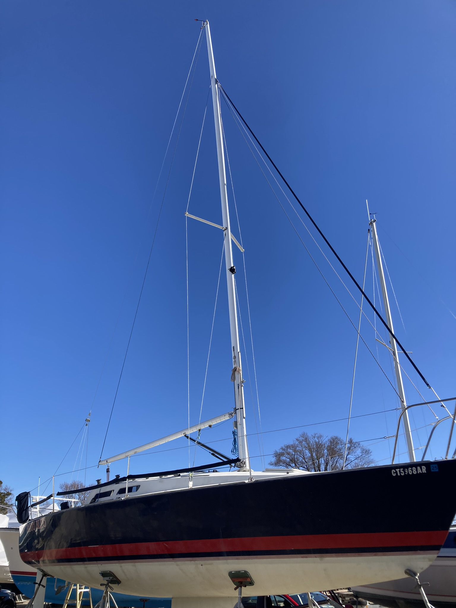
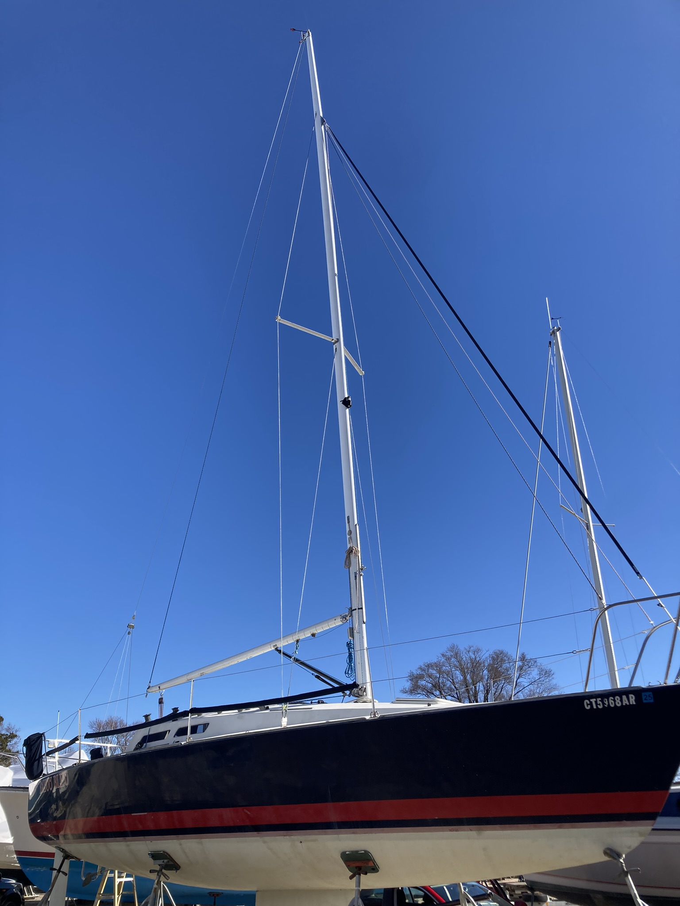